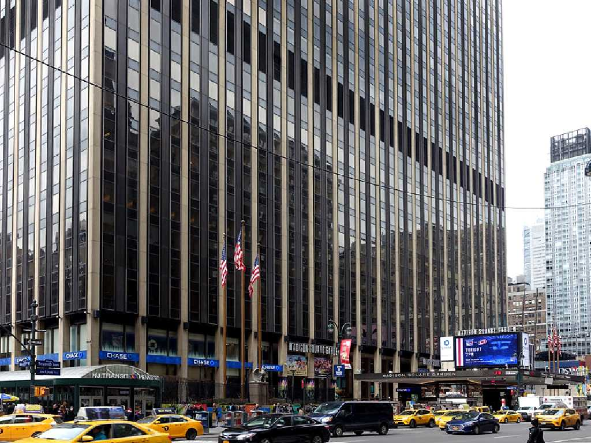
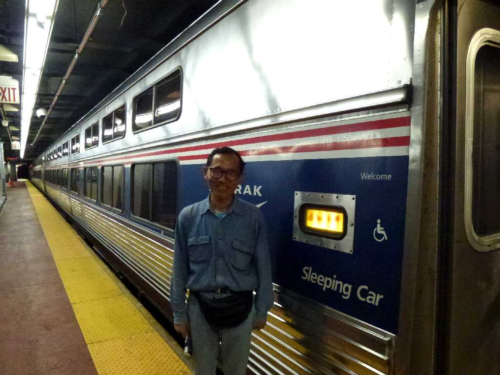

Pennsylvania Station New York
８０日間世界一周鉄道の旅で６６日目の今日は北米大陸大西洋岸の街ニューヨークから鉄道で北米大陸を約６,０００㎞縦断し太平洋岸の街サンフランシスコに向かう

August 28 2013 Pennsylvania Station
Lake Shore Limited Train No.49 Timetable Amtrak August 28 15:45 Pennsylvania New York to August 29 9:45 Union Chicago
アムトラックのレイクショアリミテッドでニューヨークのペンシルベニア駅を離れシカゴのユニオン駅に向かう